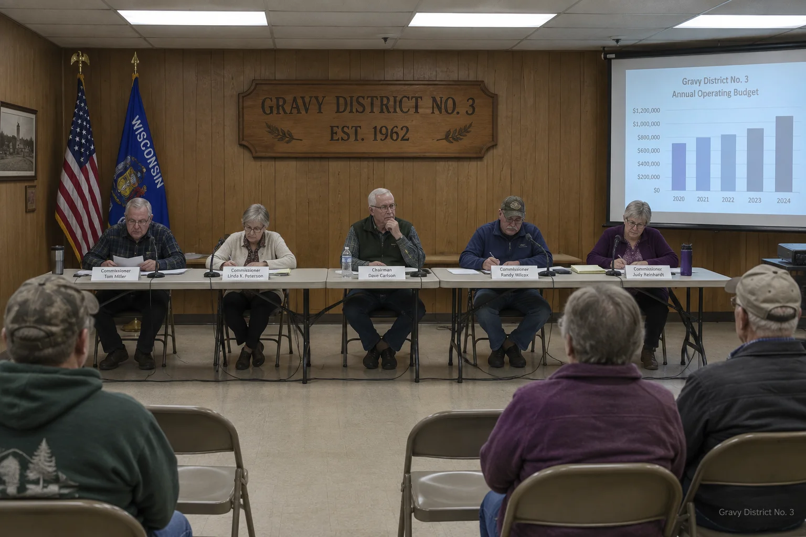
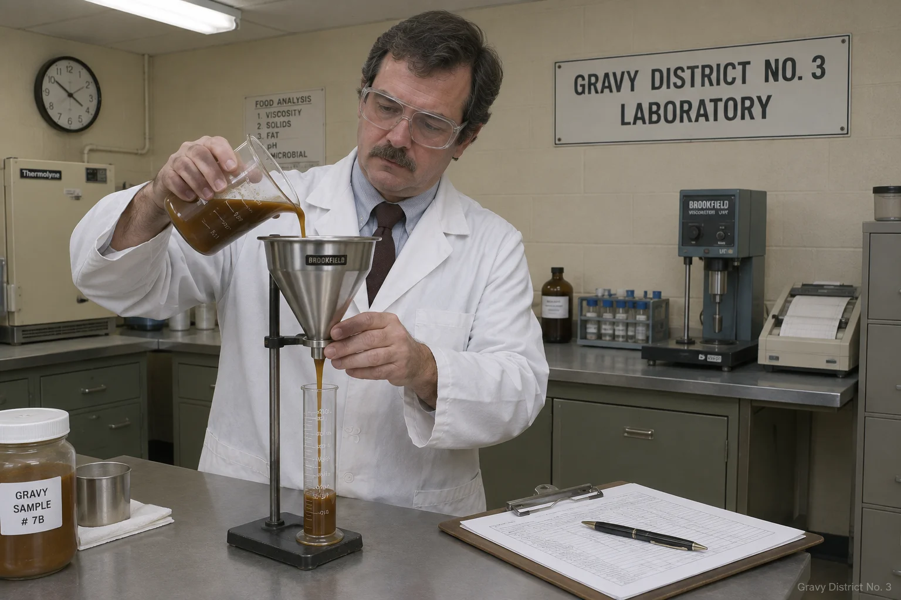
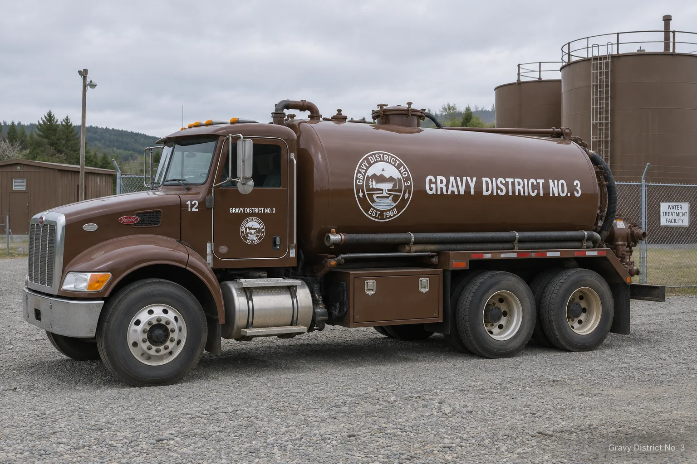

Board of Gravy Commissioners
The District is governed by five commissioners elected to staggered six-year terms, one from each township and two at large. The Board sets rates, approves capital projects, hears appeals, and rules on lump classification disputes. Meetings are held the second Tuesday of each month at 6:00 PM at the District office and are open to the public. Minutes are approved at the following meeting, usually after a discussion about the minutes.

Retired dairy farmer. On the Board since 1991. Has personally tasted every compliance sample since 1994 and says he can tell which pump it came from. Nobody has tested this claim because nobody wants to be wrong.
Former school lunch director. Led the 2018 sodium reduction initiative, which passed 3 to 2 and is still brought up at family gatherings across the District.
Appointed in 2021 after the seat sat vacant for two years because nobody filed. Has since won re-election unopposed, which she calls a mandate.
Owns the implement dealership. Votes no on most things, then helps carry the folding tables back. Chairs the Viscosity Standards Subcommittee.
The Board's newest member and the first commissioner to propose publishing the outage map online, in 2019. The motion carried after two years of study.
Meeting minutes and agendas
Recent minutes are summarized below. Complete minutes run considerably longer and are available at the office.
- September 8, 2026: Minutes
Cross-connection sweep results received. Eleven citations. One resident argued his connection was "more of a bridge." Citation upheld 4 to 0. - August 11, 2026: Minutes
Surge tariff dates set. Public comment: 2 hours, 40 minutes, most of it about the 1994 incident, none of it new. - July 14, 2026: Minutes
East tank inspection accepted. Motion to add a mushroom system failed for the 31st consecutive year. Petitioners thanked for their consistency. - June 9, 2026: Minutes
Annual audit accepted. The auditor noted the District is "solvent, orderly, and unusually fragrant," and the Board voted to enter the compliment into the record. - October 13, 2026: Agenda (upcoming)
Item 4: proposed lump thresholds, continued from March. Item 5: whether item 4 should be continued again.
Annual Gravy Quality Report (2025)
State code requires the District to publish yearly quality results for each system. Samples are drawn weekly at six points on each main and tested at the District laboratory. The 2025 results are summarized below. The full report, including the lump appendix, is available at the office.

| Parameter | Standard | Turkey system | Beef system | Status |
|---|---|---|---|---|
| Viscosity at tap (Gerald seconds) | 28 to 41 | 33.2 | 36.8 | In compliance |
| Lumps per 1,000 gallons | ≤ 4 | 1.7 | 2.9 | In compliance |
| Delivery temperature, °F | ≥ 165 | 171 | 169 | In compliance |
| Sodium, mg per serving | ≤ 620 | 540 | 605 | In compliance |
| Opacity (District scale) | 7 to 10 | 8.4 | 9.6 | In compliance |
| Trace turkey in beef main | 0 | n/a | 0.002% | Monitoring (see note) |
Note on trace turkey: The reading traces to a single sampling point downstream of a 2024 citation site in Lower Giblet. The line was flushed, the reading is falling, and the resident responsible now serves on the volunteer Flush Committee, which the Board considers both a penalty and an honor.
District staff
Day-to-day operations are managed by the District Superintendent, a staff of nine, and Doris, whose title is Administrative Coordinator and whose actual role is understood by everyone. The District fleet includes three tankers, numbered 2, 7, and 12. The numbering was inherited from the county surplus auction and the Board sees no reason to disturb it.
